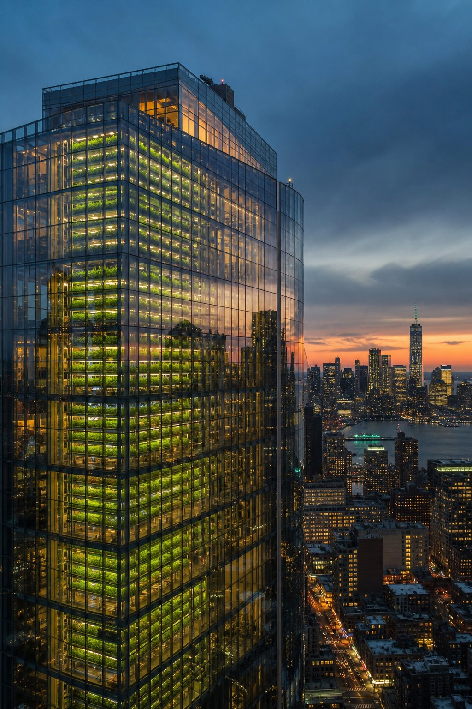

2012SG
Singapore
Sky Greens
The world's first low-carbon, water-driven vertical farm. Gravity-powered A-frame towers rotate 1.7 tonnes of crops using just 0.5 litres of water per cycle — claiming 10× the yield of soil farms per area.